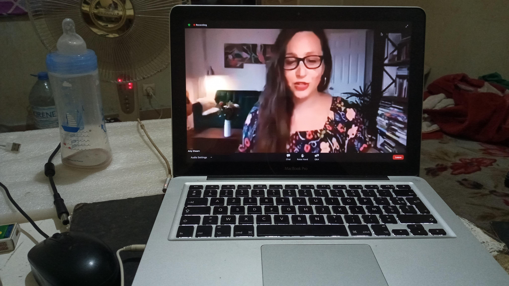

Pick yourself and you will be picked
an Advice for writers, coders, designers everybody who care about doing something


It is tempting to wait to be picked before doing works that matter but the best path is to pick yourself and do the work like if you were picked by this great company or startup you are willing to work for.
If you want to be a marketer start marketing things. if you want to be a writer start assembling words. if you want to be a programmer start coding and do it by not being afraid to ship bad code or bad writings but never sell things that you know are bad and not worth their prices.
See what is required to be done for you you to be qualified as what you want to be and just do it and don’t wait for this degree and this job. Being a graphic design requires designing great logos, images composition, posters, and,… then start now because the production tools and means are almost free. If otherwise, you are interested in marketing then find a product you think you could sell and open a Shopify store or use amazon and start marketing this product. By doing this you will increase drip by drip your skills and be able to say here and there I did this but you should make your work public and discoverable by everybody. This is the power of the internet which I was qualifying as a pitch delivering system but here the pitch is not well-thought slogans or commercial pieces of text but your work.
Of course, internet platforms should make content discovery work for individual talent like you instead of hustling groups of marketers and wealthy companies and startups, and the talent discovery process of HR teams should leverage Artificial intelligence and search engine technology for discovering all this amazing work you have shared online. That’s why I said that the actual talent discovery process of companies is outdated because they are mainly focused and driven by resumes while they could like google gather your online activities for knowing you better and see that you fit perfectly this job you are looking for.
Today I have participated in this Medium essay workshop presented by Amy Shearn and …
and at the end of the workshop, during the QA my question was about the discovery of people like you and me who outside a market-driven system are sharing ideas thoughts, and personal experiences with others because I am feeling that I got less exposure than I deserve but thankfully there are publications like Nerd for tech, Predict and data-driven investor which are accepting my articles despite their quality giving me, by the way, more exposure and you giving me your attention. I was disappointed because my question was skipped but the workshop was great and I scored it 10. Amy Shearn
I asked about the articles discovery system of medium but I don't care about it because I could write every day even if nobody read me because I know what I get writing is enough but being read gives me more motivation and help me level up. I am writing because of this piece of advice I gave you above which I repeat here again and in bold. If you want to be a writer start writing and don't wait for a publication to hire you and ask you to write for them.
Just write, just do the work, the remaining will take care of itself.
PS: this is a personal and motivational article and it sounds mainly about me if it looks selfish please forgive me because my writings are about you, not me.